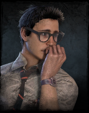
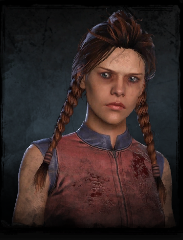
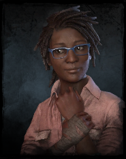
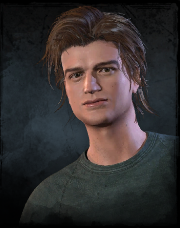
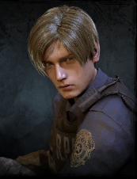
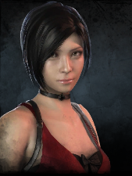
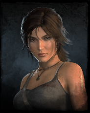
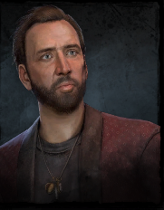

Dwight Fairfield
Nieśmiały lider grupy. Jego perki wspierają drużynę i pomagają w odnajdywaniu innych graczy.
Ci, którzy walczą o przetrwanie
Ocaleni to czterech graczy, których celem jest ucieczka z mapy. Współpracują ze sobą, naprawiając generatory i ratując się nawzajem z haków.

Nieśmiały lider grupy. Jego perki wspierają drużynę i pomagają w odnajdywaniu innych graczy.

Wysportowana biegaczka. Jej perki pozwalają na szybkie ucieczki przed zabójcą.

Specjalistka od leczenia. Potrafi ukrywać się w krzakach i wspierać rannych towarzyszy.

Pochodzi z serialu internetowego science fiction-horror z 2016 roku Stranger Things.

Pochodzi z serii gier wideo Resident Evil, a dokładniej z remake'u gry Resident Evil 2 z 2019 roku.

Pochodzi z serii gier wideo Resident Evil, a dokładniej z remake'u gry Resident Evil 2 z 2019 roku.

Pochodzi z przygodowej gry akcji Tomb Raider z 2013 roku, pierwszej części Trylogii Ocalałej.

Nicolas Cage jest supergwiazdą uwięzioną w roli życia. Jest znany z różnych filmów, takich jak Ghost Rider oraz Lord of War.